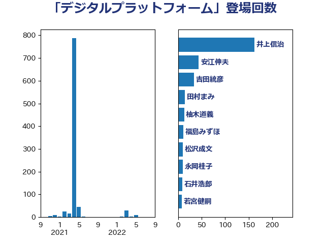

単語「デジタルプラットフォーム」

| 井上信治 | 自由民主党 | 162 回 |
| 安江伸夫 | 公明党 | 44 回 |
| 吉田統彦 | 立憲民主党 | 34 回 |
| 田村まみ | 国民民主党 | 15 回 |
| 柚木道義 | 立憲民主党 | 13 回 |
| 福島みずほ | 社会民主党 | 11 回 |
| 松沢成文 | 日本維新の会 | 10 回 |
| 永岡桂子 | 自由民主党 | 10 回 |
| 石井浩郎 | 自由民主党 | 9 回 |
| 若宮健嗣 | 自由民主党 | 8 回 |
| 宮崎雅夫 | 自由民主党 | 6 回 |
| 伊佐進一 | 公明党 | 5 回 |
| 平井卓也 | 自由民主党 | 5 回 |
| 武村展英 | 自由民主党 | 5 回 |
| 梶山弘志 | 自由民主党 | 3 回 |
| 畦元将吾 | 自由民主党 | 3 回 |
| 三ッ林裕巳 | 自由民主党 | 2 回 |
| 古屋範子 | 公明党 | 2 回 |
| 小倉將信 | 自由民主党 | 2 回 |
| 小林鷹之 | 自由民主党 | 2 回 |
| 川田龍平 | 立憲民主党 | 2 回 |
| 菅義偉 | 自由民主党 | 2 回 |
| 阿達雅志 | 自由民主党 | 2 回 |
| 鬼木誠 | 立憲民主党 | 2 回 |
| 串田誠一 | 日本維新の会 | 1 回 |
| 伊藤孝恵 | 国民民主党 | 1 回 |
| 大野泰正 | 自由民主党 | 1 回 |
| 山東昭子 | 自由民主党 | 1 回 |
| 江島潔 | 自由民主党 | 1 回 |
| 藤原崇 | 自由民主党 | 1 回 |
| 赤池誠章 | 自由民主党 | 1 回 |
| 赤澤亮正 | 自由民主党 | 1 回 |